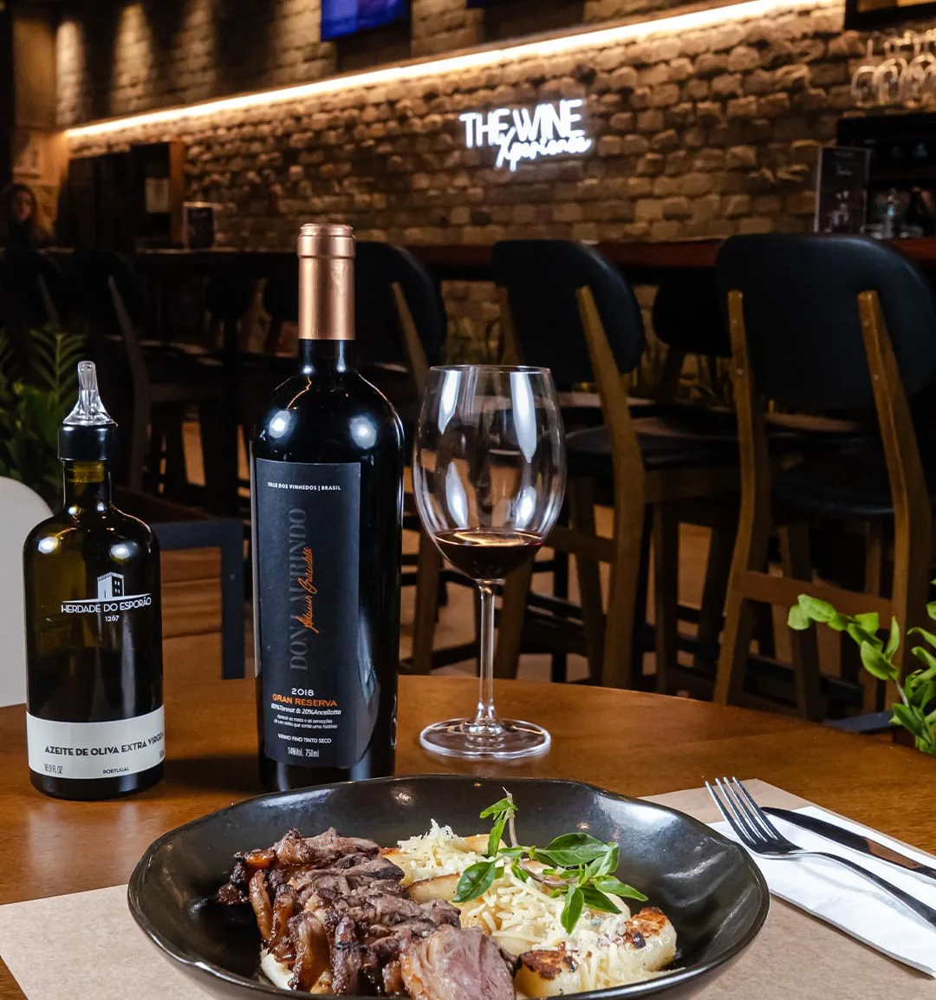
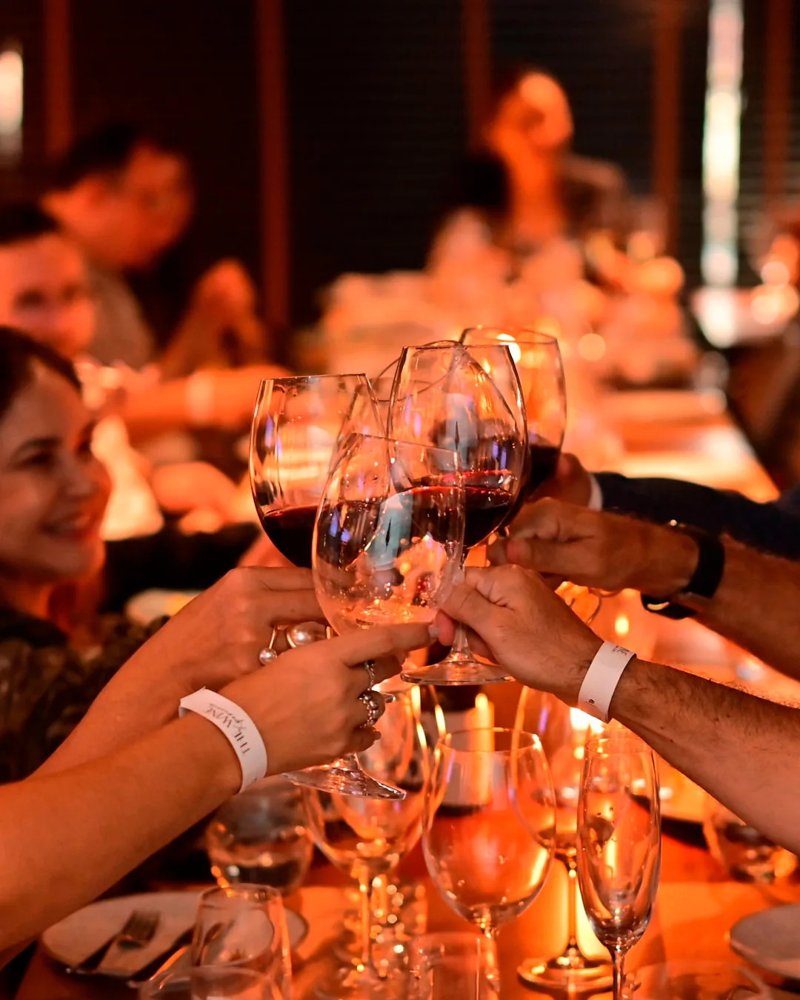
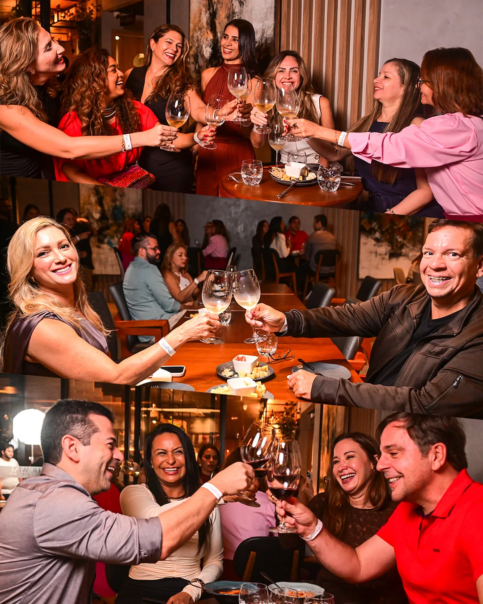

-

Jantar Harmonizado Menu especial Menus exclusivos criados pelo chef, onde cada prato encontra seu vinho perfeito em uma experiência enogastronômica completa. Saiba mais -

Noite de Degustação 1ª sexta-feira Uma noite dedicada a descobrir novos rótulos, com curadoria especial e harmonizações que surpreendem o paladar. Saiba mais -

Wine Tasting Sob agendamento Degustações guiadas para pequenos grupos, com seleção de rótulos e aprendizado sensorial em ambiente exclusivo. Saiba mais -
 Eventos Privados
Sob consulta
Celebrações íntimas, encontros corporativos e ocasiões especiais com ambientação personalizada e serviço impecável.
Saiba mais
Eventos Privados
Sob consulta
Celebrações íntimas, encontros corporativos e ocasiões especiais com ambientação personalizada e serviço impecável.
Saiba mais